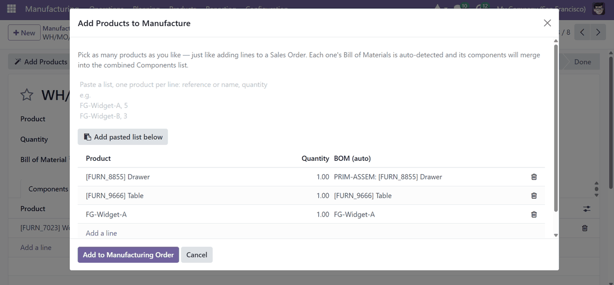
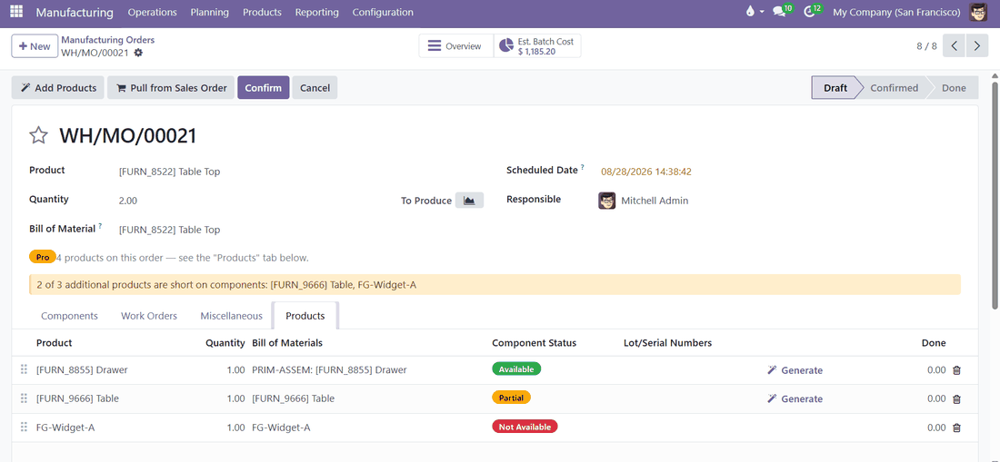
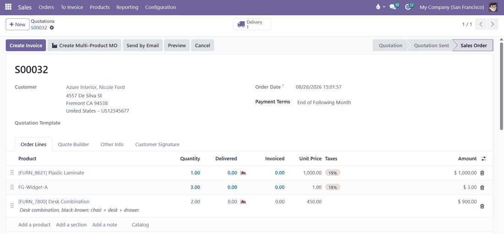
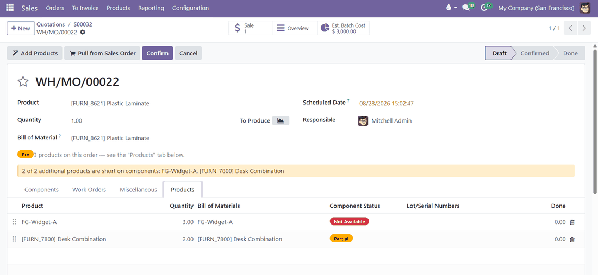
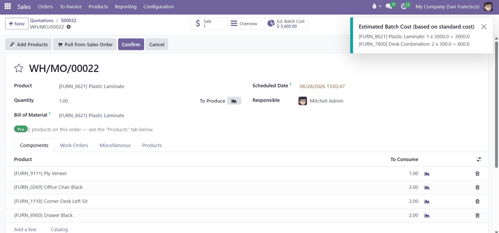
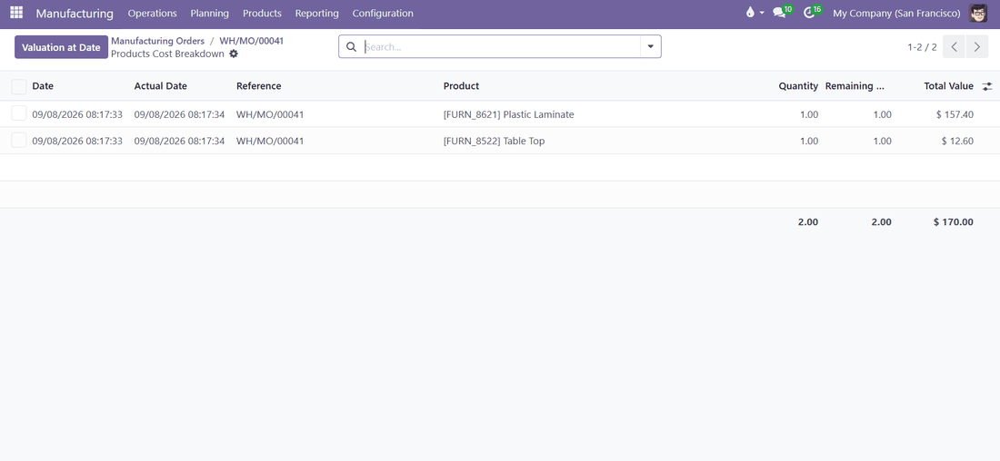
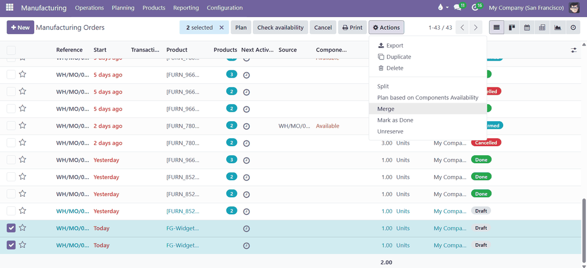
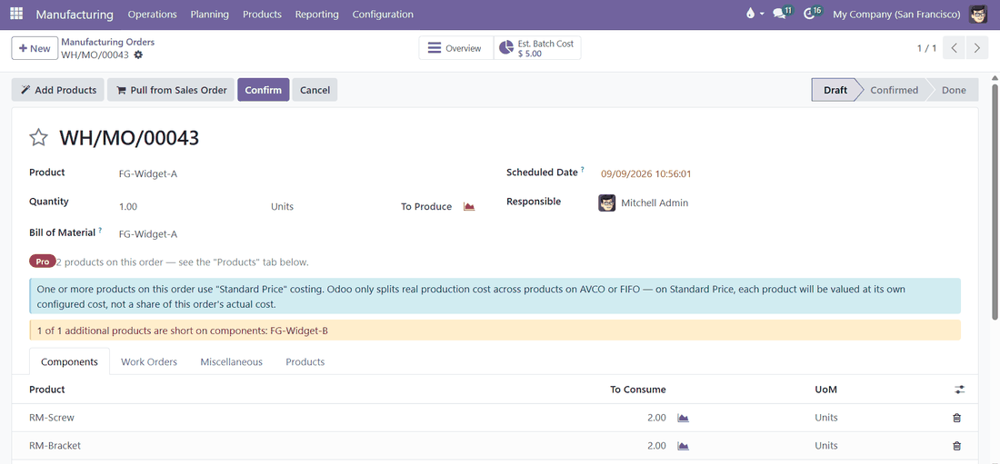

Pick multiple finished products on one Manufacturing Order, just like adding lines to a Sales Order — components merge automatically, and you get a real per-product cost breakdown when it's done.
What You Get
Install once, and any Manufacturing Order can carry as many finished products as the run actually produces — no extra setup required.
Add as many finished products to one Manufacturing Order as you need, each with its own Bill of Materials, quantity, and tracking.
Every additional product's Bill of Materials is auto-detected and its components merge straight into the MO's combined Components list.
Paste a whole list of products at once, one per line, instead of adding them one by one — useful when the list already exists somewhere else.
Working from an order that mixes multiple products? One click turns every produceable line on that SO into a product on the MO.
Already created two or more separate MOs that could have been one? Select them and merge into a single multi-product order.
Each additional product gets its own component availability status and lot/serial number generation, right alongside the main product.
A smart button gives you a standard-cost estimate of every product on the order before you confirm, with a line-by-line breakdown.
Once the MO is done, see the real, split cost of every product that came out of that run on AVCO or FIFO costing — not just an estimate.
A "Products" count badge shows on every order in your normal Manufacturing views, so multi-product MOs are obvious at a glance.
Open "Add Products," type a name, pick it, done — exactly like adding a line to a Sales Order. Its Bill of Materials is auto-detected and its components merge straight into the MO's combined Components list.

Each additional product gets its own row in the Products tab, with a live component-availability badge, lot/serial generation, and a done-qty column — right next to the main product, not buried in a second MO.

Working from an order that mixes multiple products? Use "Pull from Sales Order" and every produceable line on that SO becomes a product on the MO — no re-typing, no separate MOs to reconcile against invoicing later.

Before · a Sales Order with three different products on it

After · one click later, all three products on a single MO with components already merged and availability checked
The "Est. Batch Cost" smart button gives you a standard-cost estimate of every product on the order before you confirm — hover it for a line-by-line breakdown of exactly which product is driving the number.

Once the MO is done, the same button switches to "Products Cost" and shows the real, split cost of every product that came out of that run — not just an estimate, the actual value posted per product.

Select two or more MOs in the list view, open Actions → Merge, and they combine into a single multi-product MO. The same list view also shows a "Products" count badge on every order, so multi-product MOs are obvious at a glance — nothing extra to configure.

How It Works
Add products one at a time, paste a whole list at once, or pull directly from a Sales Order — whichever fits how the work actually comes in.
01
Open "Add Products," type a name, pick it, done — exactly like adding a line to a Sales Order. Its Bill of Materials is auto-detected.
02
In the same wizard, paste a list of products, one per line (product name, comma, quantity). Handy when you already jotted the list down elsewhere — a note on your phone, an email, a message from a client.
03
On an SO with several products, one click turns every produceable line into a product on the MO — no re-typing, no separate MOs to reconcile later.
04
Confirm and produce as usual. Once done, the same smart button shows the real, split cost of every product the run actually produced.
One Thing To Know
You can add, produce, and track multiple products on one MO no matter how your products are costed. But the real, split cost per product after production — where the cost of what you actually used gets divided fairly between the products it made — only works correctly if your products use Average Cost (AVCO) or FIFO. This is set per product in Odoo, under Inventory → Accounting on the product form.
If a product instead uses Standard Price (Odoo's default for new products), Odoo values it at whatever fixed price is typed into that product, no matter what this specific batch actually cost to make. That's not a bug and not something this module changes — it's simply what "Standard Price" means in Odoo. You'll still see a plain on-screen note right on the order whenever this applies, so it's never a surprise.

FAQ
Yes. Nothing changes about a regular MO. This only adds extra options — you decide per order whether to use them.
You'll see a clear on-screen warning before you confirm. Set a BOM for it right there, or confirm anyway if producing it with zero components is intentional.
The product itself can't be changed once added, to keep the order consistent with what's already reserved — but its quantity, unit of measure, BOM, and lot/serial numbers can still be edited.
Yes, every additional product gets its own lot/serial number field, same as the main product.
Yes, if your products use AVCO or FIFO costing. See "One Thing To Know" above if you're using Standard Price.
Yes — select any two or more compatible draft or confirmed MOs in the list view and use Actions → Merge.
Built by ScopySoft · Odoo 18